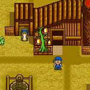

-Segredos Escondidos- |
| Árvore do Sino/Bell Tree | |
| Algum dia durante o Verão(Quando eu estava jogando ele veio no verão, no web site(Ushi no Tane) diz inverno) O Camelô do Vento vai para sua fazenda. Ele diz que tem uma árvore que dá dinheiro pra você, mas custa 20000G. Embora custe os olhos da cara, compre por que ao invés de uma árvore que dá dinheiro, tem um sino na árvore. Ao invés de ter que chamar suas vacas de noite, a árvore do sino faz isso automaticamente pra você! Assim ganha muito tempo. |  |
| Relógio de graça | |
| Se você comprar uma Super Casa de Madeira de Luxo(A maior expansão) no fim do primeiro verão você ganhará o relógio. | |
| Nascer pelo caminho mais fácil | |
| Primeiro de tudo você deve ter uma vaca adulta. Segundo, saia e compre um remédio/medicine potion e uma poção milagrosa. Então de a poção milagrosa para sua vaca e imediatamente depois disso, dê a sua vaca o remédio. Em três dias sua vaca dará a luz ao invés de esperar 30(Trinta) dias. | |
| Ovos de Ouro/Golden Egg | |
| Quando o camelô do vento vier para sua fazenda e pedir para trocar por um feijão mágico pela sua vaca, troque. Depois vá para o Topo da Montanha e plante o feijão mágico. Depois de crescer, suba nela. Você vai encontrar a galinha dourada. Vá para o mercado no final de semana e visite o camelô para vender a ele o ovo da galinha dourada por 10.000G. | |
| Como vai você | |
| Este é um bom indicador de como você está indo até agora no jogo. Se você quiser o que o final seja uma surpresa, não use este código. Se você quiser saber qual o fin você teria, então faça o seguinte. Enquanto você vai dormir a noite, a tela escurece. É hora de você segura R, L, Start e SELECT(Ao mesmo tempo) e mostrará a você qual fim você chegaria a esse ponto no tempo... | |
| Mais Madeira | |
| Corte os tocos de madeira próximo a casa dos Carpinteiros. Depois entre na casa deles por um segundo, e saia. Os tocos que você cortou reaparecerá. | |
| Proteja sua Cerca | |
| Contanto que seu cachorro esteja fora, suas cercas não quebrarão(Exceto em dias de chuva e neve). | |